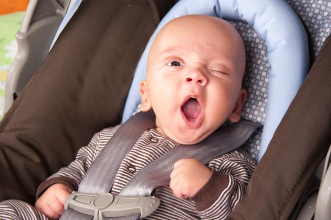

Foteliki w aucie-ważne zasady
14.03.2020 | 12:15:32 | Dawid Karpczak
Prawdopodobnie każdy rodzic jest świadomy tego, iż jego dziecko do określonego wieku i wzrostu musi jeździć autem w foteliku samochodowym.Regulują to europejskie i polskie przepisy, ale przede wszystkim także z zasad bezpieczeństwa. Dziecko bez fotelika podczas gwałtownego hamowania lub ostrego manewru jest bowiem zupełnie bezbronne i narażone na urazy, utratę zdrowia, a nawet na śmierć.W 2017 roku w życie weszły nowe przepisy dotyczące zasad przewożenia dzieci w aucie. Niniejszy artykuł zawiera opis zmian, a także praktyczne wskazówki dla rodziców. Do kiedy jest obowiązek jazdy foteliku, a od kiedy dziecko może jeździć na podkładce?
W 2017 roku rząd przyjął projekt nowelizacji Ustawy Kodeks Ruchu Drogowego, który jest zgodny z wymogami Unii Europejskiej. Część zmian dotyczyła zasad przewożenia dzieci w fotelikach samochodowych. Do najważniejszych z nich należy zniesienie granicy wiekowej do przewożenia dzieci w foteliku samochodowym oraz zezwolenie na jazdę w foteliku dzieci do 150 cm w przedniej części samochodu.
Ponadto, zgodnie z nowymi zapisami Kodeksu Ruchu Drogowego, rodziców i opiekunów dzieci mających powyżej 135 cm zwolniono z obowiązku jazdy w foteliku z tyłu samochodu. Od czasu nowelizacji można przewozić je również w pasach bezpieczeństwa.Od czasu zmiany przepisów dotyczących przewożenia dziecka w samochodzie, obowiązek jazdy w foteliku nie dotyczy też dzieci posiadających zaświadczenia lekarskie z przeciwwskazaniami do jego stosowania.Unormowano również zasady przewożenia trójki małych dzieci w przypadku, gdy nie ma możliwości zainstalowania trzech fotelików z tyłu samochodu. W tej sytuacji dziecko może jeździć bez fotelika, jeśli ma ukończone trzy lata. Wówczas może być przewożone z tyłu samochodu, ale w zapiętych pasach bezpieczeństwa. W praktyce przepis ten dotyczy auta 5-osobowego, ponieważ w przypadku samochodu 7-9 osobowego nie ma problemu z zainstalowaniem dodatkowego, trzeciego fotelika.
Bardzo istotną zmianą jest również nałożenie na rodzica lub opiekuna obowiązku dostosowania wymiarów fotelika dla dziecka do jego masy ciała oraz wzrostu, a także zamontowanie fotelika samochodowego zgodnie z zaleceniami producenta. Niestosowanie się do tych przepisów może skutkować karą grzywny.Nowe przepisy Kodeksu Ruchu Drogowego nie zmieniają nakazu przewożenia dzieci w przedniej części auta tyłem do kierunku jazdy. Zmiany nie obejmują również dotychczasowych przepisów, które dotyczą wyłączenia z zasad przewożenia dzieci: pojazdu Policji, straży miejskiej, Straży Granicznej, taksówek czy specjalistycznego środka transportu sanitarnego.
Większe dziecko nie musi korzystać z fotelika samochodowego. W jego przypadku świetnie sprawdzi się podkładka dla dziecka do samochodu. Przepisy określają, że podstawkę zamiast fotelika można stosować, gdy dziecko waży powyżej 25 kilogramów. Większość podkładek przeznaczona jest dla dzieci ważących nie więcej niż 36 kg. Tym bardziej, że od tego momentu dziecko może jeździć zarówno bez fotelika, jak i bez podstawki.W przypadku starszych dzieci podkładka dla dziecka do samochodu przede wszystkim zapewnia ochronę brzucha małego pasażera. Nawet u starszych dzieci nie są jeszcze wykształcone przednie górne kolce biodrowe. W momencie wypadku pas bezpieczeństwa łatwo zsuwa się z miednicy uciskając brzuch i powodując często poważne obrażenia. Podstawki z ogranicznikami na pasy zdecydowanie zmniejszają siłę nacisku.
Opisane wyżej przepisy mają na celu zapewnienie bezpieczeństwa dziecku podczas podróży samochodem. Jednak samo przestrzeganie tych przepisów nie zapewni maksymalnego bezpieczeństwa pociechom i rodzice sami powinni zadbać o pewne aspekty, które mogą zwiększyć jego poziom.Po pierwsze, pomimo, że prawo zezwala na przewożenie dziecka w foteliku w przedniej części auta tyłem do kierunku jazdy, należy pamiętać, iż dziecko najbezpieczniejsze będzie w tylnej części samochodu. W momencie zderzenia wybuchająca poduszka powietrzna może bowiem zrobić krzywdę dziecku, więc należy je lokować albo z tyłu, jeśli poduszki są włączone albo wyłączyć poduszki i maksymalnie oddalić fotelik od miejsca ewentualnego niekontrolowanego wybuchu poduszki, tak by nie uszkodziła ona malucha. Wielu producentów oferuje możliwość montażu przycisku wyłączającego poduszkę podczas przewożenia dziecka z przodu.
O ile starsze dzieci narażone są przede wszystkim na urazy związane z nieprawidłowo dobranym fotelikiem czy też niewłaściwym zapięciem dziecka, o tyle niemowlęta i roczne maluchy wystawione są na zagrożenia innego typu. Niejednokrotnie zdarza się, że nawet całkiem małe brzdące opanowują sztukę rozpinania pasów, o czym prowadzący samochód rodzic zazwyczaj nie wie, dopóki nie spojrzy na dziecko. Co roku słyszymy też mrożące krew w żyłach historie o dzieciach pozostawionych przez rodziców w samochodzie – przytłoczeni nadmiarem obowiązków i żyjący w wiecznym pędzie dorośli zapominają o pozostawionym w samochodzie dziecku.
Komentarze czytelników
Przemyślenia? Reakcje?Zapraszamy do przesyłania opini na naszego maila w zakładce kontakty.Zachęcam do dyskusji w komentarzach poniżej, jednocześnie prosząc o zachowanie etykiety oraz kultury wypowiedzi.

Użytkownik 1 | 10.03.2020| 15:03:20
Świetny artykuł, zgadzam się z autorem, dużo osób nie myśli zabierając dzieci ze sobą.
Użytkownik 2 | 09.04.2020 | 19:40:00
Nie zgadzam się, ale szanuję za poglądy.